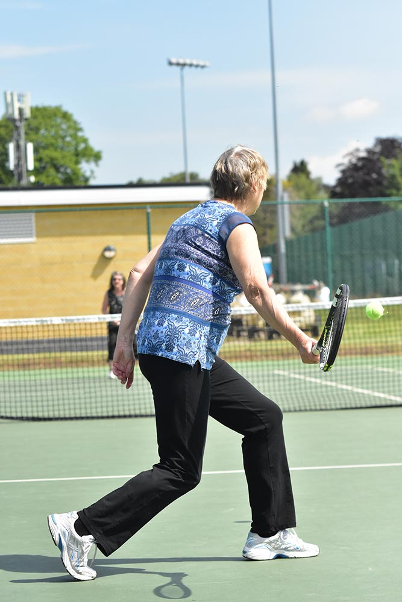
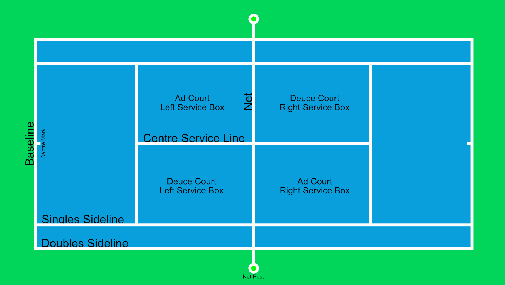
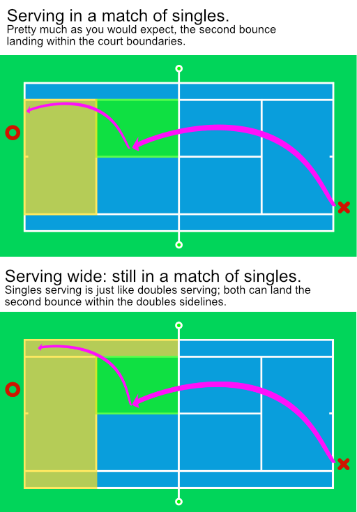
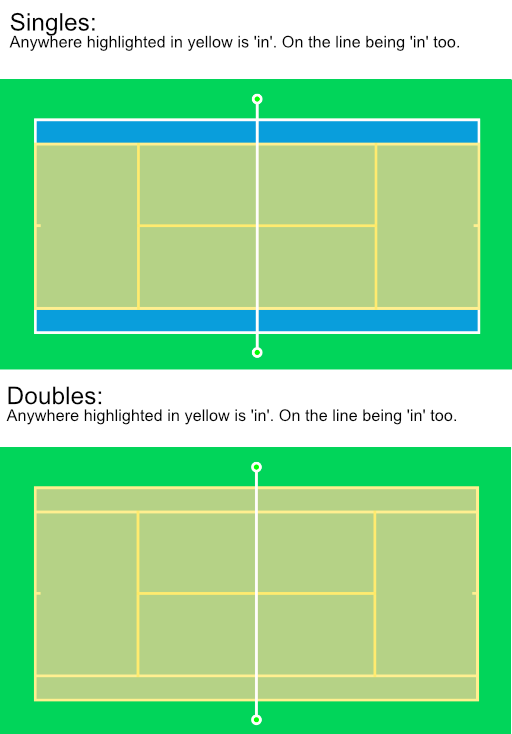

Walking Tennis is a light adaptation of normal tennis. All the standard rules apply, but for a few specific changes:

Option of a second bounce
In walking tennis you have the option of a second bounce.
* The second bounce must land within the court lines.
* The second bounce must land within the appropriate court markings (that is singles lines for singles, and doubles for doubles).
Running is not permitted
You are not allowed to break into a run.
* Running is defined as both feet leaving the ground, even momentarily.
* As both feet leaving the ground isn't allowed; that will obviously include jumping. Besides, it hurts to land.
Orange tennis balls must be used
Walking tennis is played with a low-compression orange tennis ball.
* This 'colour' isn't just the colour of the ball (most are actually still yellow). It refers to the amount of air inside the ball.
* Walking tennis balls have less air pressed inside of them to make them bounce less and fly slower.

Check out the picture to the left. You don't have to memorise everything but it's good to get familiar with what everything is called. The important difference for now
is that the singles court is narrower than the doubles court. So when there are two, instead of four, of you playing you have less far to run. The second thing to remember
is that if the ball, or your foot, is on the line; it is 'in'.
Not on the diagram, but something people say sometimes, is that the singles sideline and the double sideline together form 'tramlines'. So, in doubles, the ball
landing in the tramlines means that it is in.

When you start play in a game, the server is chosen and this stays the same for the game. You swap servers at the end of each game, taking it in turns
between all the players. In Walking Tennis, the service action can be exactly the same. Stand outside the court and on your side, as shown by the center mark.
Throw the ball up, hit it into the service box at the opposite end of the court (on a diagonal from where you are standing). Don't forget! You have to stand
outside of the court to serve, so get those toes away from the baseline (O: If you are not confident with the tennis serve, then just hold the ball out in front of you
and hit it over the net - nothing wrong with underarm, just ask Nick Kyrgios, but maybe not Nadal )O:
The exception in Walking Tennis, the one that almost eliminates the chances of an ace, is that the second bounce also has to land in the court. Here lies the
only real 'unexpected' rule in Walking Tennis. If you are playing a singles match, the second bounce can land in the doubles area to the side. This only counts
for the second bounce of the singles serve only; once that's happened, it's play as usual with the second bounce having to land in the singles area. Doubles
is just like you would expect; exactly the same as singles now we have added that rule.
If you hit a ball out of the court boundaries, or fail to get it over the net, you lose the point and you serve again. Remember, on the line, is in! And yes, we can be serious (O:
You start serving on the right side of the court, as you look at your opponent. After every serve, swap sides. Even points = right hand side serving.
This is called the 'deuce' side because it's where you serve when that's the score. Serve to the 'deuce' court which is the service box the other side of the net on the left.
The other side is the 'ad' side as that's where you serve when the score is 'advantage' to someone.
Once the serve has been hit and returned, you're into a rally! Keep going, you want to win the point now.

You're up and running, or walking, rather. You can let it bounce twice on your side before you hit it back but you can hit it before the second, or without letting it hit the ground at all.
Each shot you make has to make the ball go over the net without hitting the ground before it does. Then, your opponent has the same opportunity to hit it back.
The first person to hit it out, or fail to get it back over the net before the two bounces, loses the point. The server serves again until the end of the game.
Just a few things to note and we are done:
* Don't forget; there is no running. One foot on the ground at all times people!
* Don't lean over the net to hit the ball early, it's tempting but cheating )O:
* Don't touch the net during your point, you might be lowering it accidentally.
And your first hints:
* Aim to hit the ball to the 'service line'. This will make the second bounce land on the baseline.
* The smash and power isn't really an option any more, think tactically.
* Lobbing now is really hard, try to move your opponent around to win.
* Slice and backspin are your friends, but if you are playing someone who can't do it, ease off (it's really annoying to play someone so much better who insists on proving it on every shot)
Our goal is to make Walking Tennis as polite and fair as real tennis (if not more so). So let's play nice shall we?
It might look fun on the TV, but in real-life, if the person at the other end of the court is shouting, smashing balls and racket, and being cross in general (even at themselves) it can be quite stressful.
* So, if you are angry, take a breath, calm down. It's just tennis after all.
* This includes swearing. You're probably outside; there are kids around, or just adults who might not like it. Let's keep it civil people.
'In', 'Out', 'Long', 'Not up' - that's more than the allowed bounces. Whoever is closest is best positioned to decide.
* The ball can move quickly, the net can hide it from you. The person on the other side is much closer and far better to judge. Just go with their opinion in an argument. You won't lose the match on a single decision (O;
* There's always the option of 'close enough'! Why stop the rally if you are enjoying it and can get it, play on! You can always claim the point at the end if you want.
In tennis you play for: points, to win games to win sets to win the match. Tennis scoring can be a little difficult to the uninitiated, but more importantly it's hard to keep track when you are playing a match. So many people forget where they are, what the score is, where to stand. With this in mind, in some shameful promotion, our tech-guy, Doug, has written an application for your phone to keep track of the score while you are playing. Have a look if you are interested.
This is where things can seem a little weird. Until you are comfortable, you can just play until you have 11 points. The first person to win 11 times, and has two points ahead, wins the game. 6 Games wins you a set, 2 sets wins you the match.
But you're not here to play basic points that you could make up yourself, you're here to understand tennis scoring. So let's do it. You start off with both players (or both teams in doubles)
having zero points, we call this 'love'. Because you both have 'love', the score is 'love all'.
You win a point, congratulations; the score is now 'fifteen love' or 15-0. You are serving so your score is announced first, you have 15, your opponent still has none.
You win another point, now it's 'thirty love' or 30-0. Staring to recognise a pattern?
Another point, now it's 'forty love' or 40-0. Crud, that's different, just roll with it; we're almost there.
Another point, you're a machine! You won the game, it's One Game to none.
Your friend is serving now and they get three points, you get three also. The score lies at 40 - 40, which is 'forty all', right? Sorry, this is called 'deuce'.
When you are at deuce, the next point does not win the game. Yes, I know that you can have a 'deciding point' so that it does, but let's stay standard for now shall we?
The next point, let's say you win it, takes you to 'advantage' to you. You have the advantage because if you win the next point, you win the game.
But they win the point, grr. Now it's back to 'deuce'. It goes on like this, their advantage, deuce, your advantage, deuce, until one of you wins the point on their advantage.
Keep playing, swapping the server over every game. You are trying to win six games, and at least two games ahead. If you are close and get to 6 - 6 then you play a tie-break.
When you have won six games (2 ahead or winning the tie), you won a set. You can play the best of one, three, or five sets. It's fairly normal really to play to 'best of three', so when you have won two sets, you win the match. In the final set (set 3 if you are playing 3, or set 5 if you are playing 5) you can either carry on playing games forever, until you are two ahead, or you can play a tie-break then too. Decide on this first, it's also fairly normal to end a long match with a tie-break and they are even doing it at Wimbledon now.
In tennis you flip a coin or spin a racket to decide who starts. The winner of the toss chooses to start serving or receiving the serve. The loser gets to decide the end they want to start playing at.
After the first game, swap ends. Then every two games. So you swap ends after every odd game has ended. 1, 3, 5, etc.
Starting a new set, swap ends if you are due to swap but always swap after the first game, even if you just did already.
Confused as to who to serve after the tie-break? It's the opposite of the positions you started the tie in; the first server is now receiving and you are the other end from where you started. (this, I think might be different in the US, but does it really matter that much?)
In a tie, there is no strange scoring any more. You count from 0-7 and that's that. Again, like in a lot of tennis, you need to be two points ahead to win the tie. Keep playing points until someone is.
First to seven, and two points head wins.
Change servers a bit like changing ends. After the first serve, then after every two. So change server every 1, 3, 5, 7... points.
Change ends every 6 points.